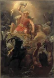
Mjöllnirwiki-fr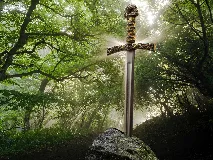
Excaliburwiki-sans-filtre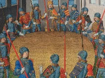
Table rondewiki-sans-filtre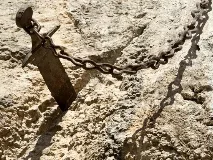
Durandalwiki-sans-filtre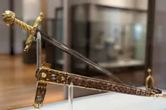
Joyeusewiki-fr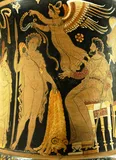
Toison d'orwiki-sans-filtre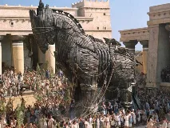
Cheval de Troiewiki-sans-filtre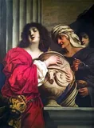
Boîte de Pandorewiki-sans-filtre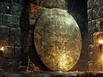
Égidewiki-sans-filtre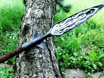
Gungnirwiki-sans-filtre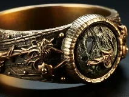
Draupnirwiki-sans-filtre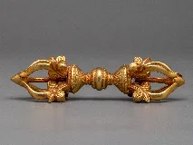
Vajrawiki-sans-filtre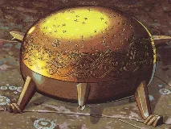
Sampowiki-sans-filtre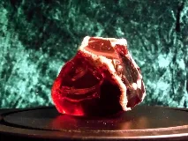
Pierre philosophalewiki-sans-filtre